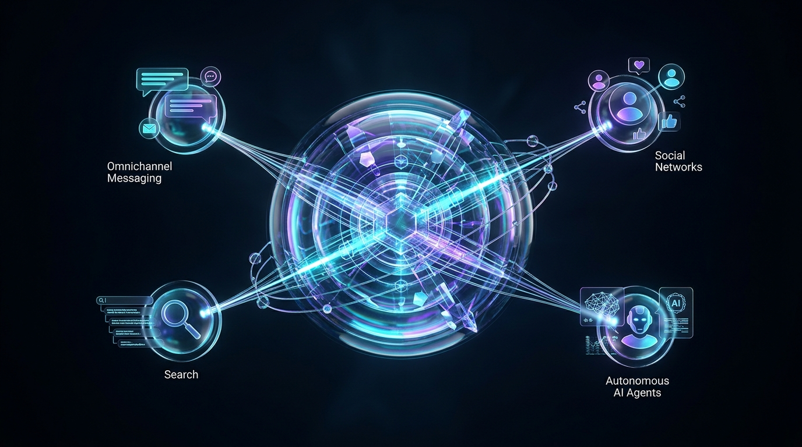

If you run a small business, startup, consultancy, or local service company, you may be wondering whether you really need a website in 2026.
After all, you already have WhatsApp, Instagram, Facebook, and referrals bringing customers to your business. So, why invest in a website?
The answer is simple: a professional website gives your business a dedicated online presence where potential customers can discover your services, understand your value, and contact you.
Social media is useful for building awareness, but a website gives you greater control over how your business is presented online.
Let's explore why a website can be a valuable investment for your business in 2026.
Before contacting a business, potential customers often want to understand what it offers, whether it is reliable, and how it can help them.
A professional website gives you a place to showcase your services, portfolio, customer testimonials, business information, and contact details.
Instead of relying only on social media posts, you can present your business in a clear, organised, and professional way.
The benefit: Help potential customers feel more confident about choosing your business.
Imagine someone searching online for a service you provide in your city. If your business has a relevant, well-optimised website, it has an opportunity to appear in search results and attract potential customers.
With useful service pages, relevant content, and local SEO, your website can support your visibility among people actively looking for what you offer.
Results are not guaranteed, and rankings take time, but a website provides an important foundation for long-term organic visibility.
The benefit: Create more opportunities to reach customers who may not know your business exists.
Your business may close in the evening, but your website remains accessible.
Potential customers can explore your services, review your work, submit an enquiry, request a quote, or book an appointment whenever it suits them.
You can also integrate WhatsApp buttons and contact forms to make getting in touch easier.
The benefit: Make it convenient for potential customers to take the next step, even when your team is unavailable.
A website allows you to explain your services in detail, highlight your expertise, display previous projects, and answer common customer questions.
This is particularly valuable for businesses offering professional services, consulting, construction, interior design, education, healthcare, or other services where customers need information before making a decision.
Rather than competing on price alone, you can communicate what makes your business different.
The benefit: Help customers understand your value and make more informed purchasing decisions.
A website should do more than look attractive. It should guide visitors towards a clear action.
That action could be requesting a quotation, booking a consultation, calling your business, or sending a WhatsApp message.
Strategically placed calls to action, relevant service pages, trust signals, and simple enquiry forms help visitors move from interest to action.
The benefit: Give potential customers a clear path to enquire about your services.
Social media platforms are valuable marketing channels, but your reach depends partly on their algorithms, policies, and account availability.
A website gives your business a dedicated digital destination that you control more directly. You can build your brand around your own domain, publish content, and direct customers from social media, advertisements, referrals, and email campaigns to one central place.
You should still use social media where it works for your audience. The goal is to complement those channels, not abandon them.
The benefit: Build a more resilient online presence instead of relying entirely on third-party platforms.
In 2026, your website can be more than a digital brochure. It can become part of a connected business workflow.
Depending on your needs, you can integrate your website with CRM systems, automated email notifications, appointment scheduling, lead management, and AI-powered customer support.
For example, when someone submits an enquiry, an automated workflow could record their details, notify your team, send a confirmation message, and create a follow-up task.
These integrations can reduce repetitive manual work and help your team respond more consistently.
The benefit: Build a digital system that supports both customer acquisition and day-to-day operations.
Not every business needs a complex website immediately. Your priorities should depend on your customers, budget, and growth plans.
However, investing in a website is worth considering if:
You don't need dozens of pages or expensive features to get started. A well-designed website with clear messaging, essential business information, and a strong call to action can provide a solid foundation.
For most small and service-based businesses, a good starting point includes:
Your website should also be mobile-friendly, fast, secure, and built with SEO fundamentals in mind.
Start with what your business needs today, then expand as your goals evolve.
A professional website is not simply an online address. It is an opportunity to build credibility, improve discoverability, showcase your services, and make it easier for potential customers to contact you.
When combined with the right marketing strategy and practical automation, it can also support a more efficient customer journey.
The important thing is to build a website around your business goals rather than adding features you don't need.
At Digital Cron, we help businesses strengthen their online presence through professional website development and practical AI automation solutions.
Whether you're launching your first website or upgrading an outdated one, the right solution starts with understanding your business, your customers, and your goals.
Let's build a website that works for your business.
Contact Digital Cron today to discuss your website requirements and explore the right solution for your business.